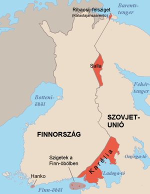
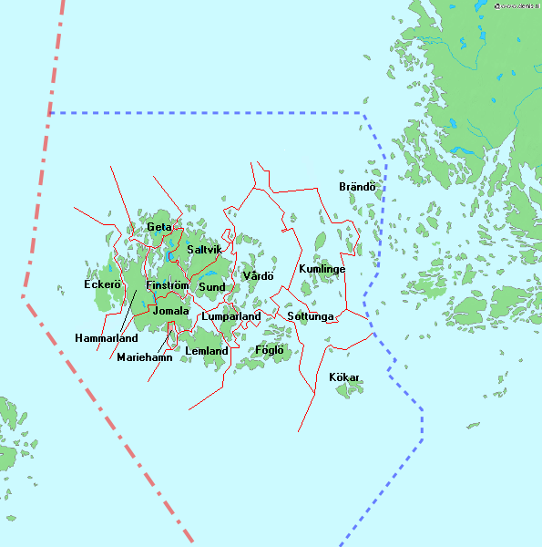

Történelme, államszervezete és közigazgatása:

- Történelem:
-
Átfogó kutatások eredményeképpen az archeológusok megállapították, hogy a mai Finnország területét a
kőkorszak alatt kezdték el lakni, a jégkorszak utolsójegének elolvadása után.
-
Régi skandináv mondák és egyes történészek szerint Finnországnak már a svéd uralom előtt is voltak
királyai. Finnország közel 700 éves kapcsolata a svéd királysággal 1154-ben kezdődött, a
kereszténység és IX. Erik svéd király révén.
-
A svéd uralom idején a vallás és az államélet nyelve a svéd volt. 1809. március 29-én I.
Sándor
orosz cár elfoglalta Finnországot, amely az Orosz Birodalmon belüli autonóm nagyhercegség volt
egészen 1917 végéig. Az orosz érában a finn nyelv modernizálódott, elismert nemzeti nyelvvé vált.
1917. december 6-án, röviddel a bolsevik forradalom után, Finnország kikiáltotta függetlenségét.
-
1918-ban az ország átvészelt egy rövid, de keserű polgárháborút, amely sok évre előre körvonalazta a
hazai politikát. A második világháború alatt Finnország kétszer is harcolt a Szovjetunió ellen: az
1939-40-es téli háborúban (segítséget kapott többek között Svédországtól, illetve egy zászlóaljnyi
önkéntest Magyarországtól is), és másodszor 1941 és 1944 között (Németország jelentős segítségével). Ezt
követte a lappföldi háború 1944-45-ben, amikor Finnország kivonulásra kényszerítette a németeket az
országból.
-
A második világháború után Finnország ütközőzóna volt a Szovjetunió és a nyugati országok között. Belső
társadalmi rendjében nyugati mintát követett, de katonailag kiszolgáltatott volt a Szovjetuniónak. Annak
összeomlása után Finnország is önállóan választhatta meg fejlődésének útját, és 1995-ben csatlakozott az
Európai Unióhoz. 1999-ben az elsők között tért át az euró használatára, egyedüliként az északi országok
közül.
- Alkotmány, államforma
-
Finnország parlamentáris köztársaság, amelyben a köztársasági elnök is jelentős hatalommal rendelkezik.
A jelenlegi alkotmányt a parlament 1999. június 11-én fogadta el, és 2000. március 1. óta hatályos.
- Törvényhozás, végrehajtás
-
A végrehajtó hatalom az Államtanács (kormány). A miniszterelnököt a parlament választja meg. Az
Államtanács a miniszterekből és a miniszterelnökből áll.
-
A 200 tagból álló egykamarás parlament, a legfelsőbb törvényhozó hatalom. Tagjait a választók négy évre
választják. A parlament megváltoztathatja az alkotmányt, lemondathatja az Államtanácsot és
megszüntetheti az államfői vétókat.
-
A finn igazságszolgáltatás polgári, büntető és közigazgatási bíróságokból áll. A helyi bíróságok felett
fellebbezési bíróságok vannak, legfelül pedig a Legfelsőbb Bíróság.

- Közigazgatása
-
Finnország öt tartományból áll:
- Åland
- Dél-Finnország
- Kelet-Finnország
- Lappföld
- Nyugat-Finnország
- Oulu
- Az Åland-szigetek széles körű autonómiát élveznek. A helyi közigazgatás 450 önkormányzatra osztja fel a
hat főbb tartományt. 1977 óta nincs jogi vagy közigazgatási megkülönböztetés a városok és más
önkormányzatok között.
- Politikai pártok
-
- Finn Központi Párt (Kesk)
- Finn Szociáldemokrata Párt (SDP)
- Nemzeti Koalíció (KoK)
- az „Igazi Finnek” (PS)
- Finn Baloldali Szövetség (Vas)